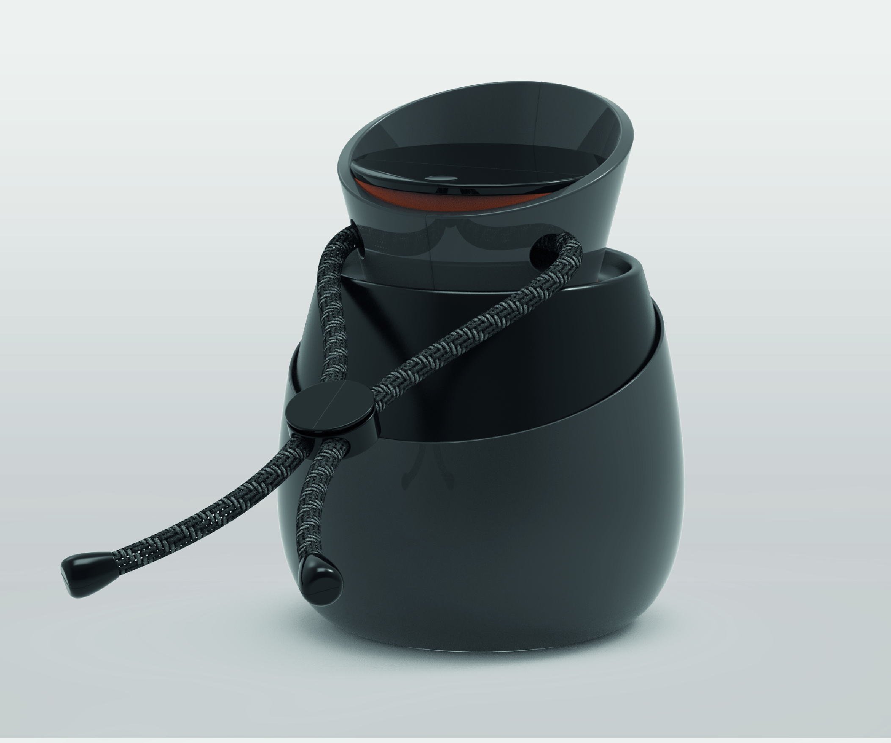
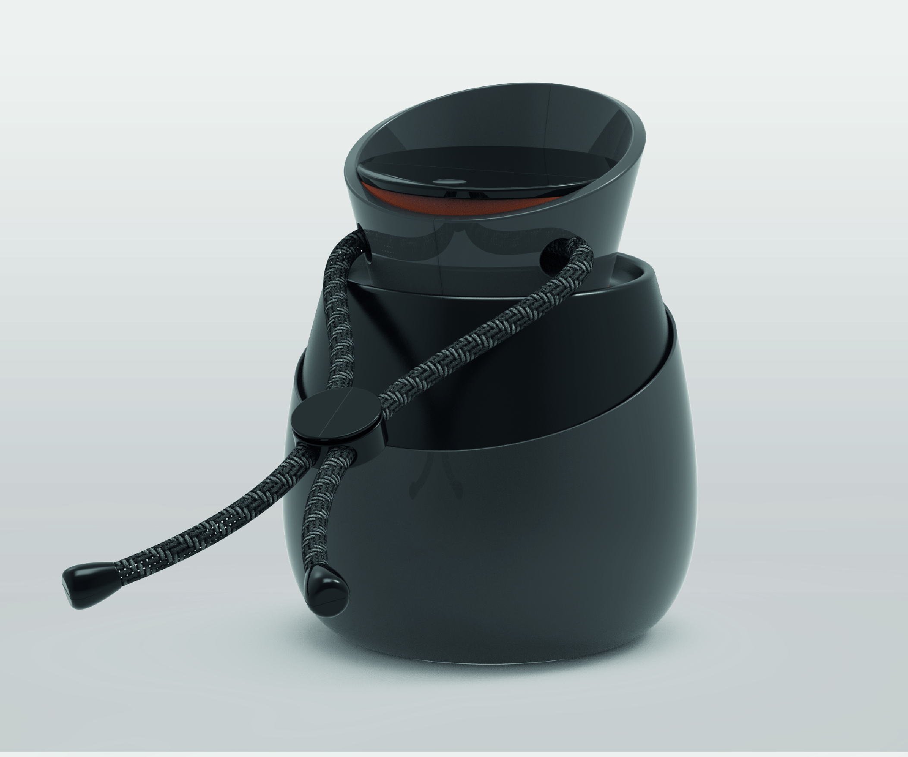

Sobre mí
A través del diseño, encontré una herramienta poderosa para repensar lo cotidiano, proponer mejoras concretas y crear soluciones que combinan estética, funcionalidad y pensamiento crítico. Cada proyecto representa para mí una oportunidad para explorar, cuestionar y aportar valor. Me interesa especialmente cómo el diseño puede generar impacto en la vida real, desde lo visual y lo conceptual hasta lo material y lo sistémico.
Servicios
Diseño Gráfico
Creación de piezas visuales y diseño de identidad, aplicando herramientas como Illustrator, Photoshop y After Effects para comunicar de forma clara, atractiva y coherente.
Diseño Industrial
Creación de productos y prototipado, combinando funcionalidad y estética mediante modelado en Rhino, renders en KeyShot, impresión 3D, corte láser y otros procesos digitales.
Diseño UI - UX
Creación de interfaces y experiencias centradas en el usuario, usando Figma para el diseño y prototipado, y HTML con JavaScript (p5.js) para validar ideas de forma interactiva.
Portfolio


 

Contacto
¿Querés saber más o trabajar juntos? Escribime o visitá mis perfiles